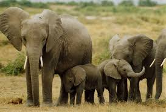
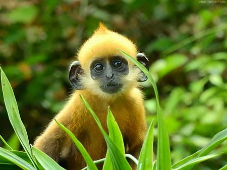
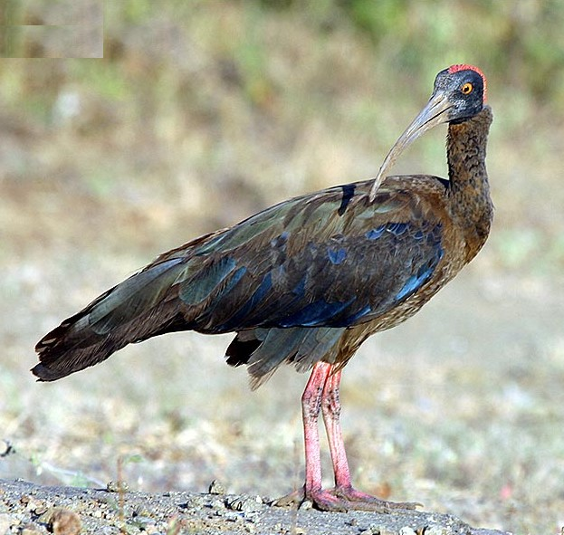
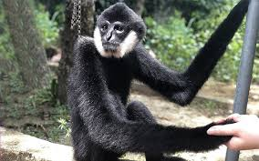

Hươu vàng
Hươu vàng, một loài động vật có vú thuộc họ Hươu nai, được mô tả bởi Zimmermann vào năm 1780.
Hươu vàng sinh sống chủ yếu ở Tây Nguyên, trong các khu vực đầm lầy của Kontum, Đắk Lắk, Lâm Đồng và Đồng Nai. Dưới tình trạng nguy cơ diệt chủng, chỉ còn vài trăm con sống ở Việt Nam và được liệt kê trong Sách đỏ Việt Nam. Chúng có kích thước trung bình, vóc dáng chậm chạp và nặng nề. Bộ lông mềm mại màu vàng hay nâu đậm tạo nên vẻ đẹp của loài hươu vàng. Hiện chỉ còn vài trăm cá thể hươu vàng ở Việt Nam, và có nguy cơ tuyệt chủng. Các chuyên gia đánh giá rằng loài hươu vàng có thể đã biến mất khỏi môi trường tự nhiên, và không còn dấu hiệu sinh sống nào được ghi nhận. Việc thực hiện các dự án bảo tồn và giám sát là cần thiết để bảo vệ loài động vật quý hiếm này.
Tìm Hiểu Thêm

Voi
Voi Việt Nam, quần thể voi gắn bó với đời sống, lịch sử và văn hóa của cộng đồng dân tộc.
Loài voi Việt Nam thuộc nhóm voi châu Á và từng phân bố rộng rãi ở Việt Nam. Hiện nay, voi hoang dã chỉ còn sống tại Tây Nguyên, đặc biệt là Đắk Lắk. Chúng có kích thước lớn, vóc dáng mạnh mẽ, và số lượng ngà voi dài. Tình trạng nguy cơ diệt chủng của voi Việt Nam đang tăng cao, và chỉ còn vài trăm con, đặc biệt là ở Tây Nguyên. Điều này đe dọa sự tồn tại của loài động vật quý hiếm này. Việc bảo tồn và giữ gìn môi trường sống của voi Việt Nam là hết sức cần thiết để tránh tình trạng tuyệt chủng. Những biện pháp bảo tồn và giáo dục cộng đồng về việc bảo vệ voi Việt Nam cũng cần được thực hiện ngay lập tức để bảo vệ di sản thiên nhiên độc đáo này.
Tìm Hiểu Thêm

Vooc đầu trắng
Theo hiệp hội bảo vệ tồn thiên nhiên thế giới, trên toàn cầu chỉ còn khoảng 60 cá thể Voọc đầu trắng sinh sống
Tập trung tại Việt Nam, đảo Cát Bà (Hải Phòng). Nơi rừng đang bị đe dọa từ các khu du lịch nghỉ dưỡng. Đặc điểm nhận dạng là bộ lông dày, sợi lông hơi thô cứng. Con trưởng thành có đầu, vai màu trắng vàng, vùng mông màu xám nhạt. Đầu có mào lông với gốc lông màu vàng nhạt, mút lông phớt xám. Đuôi dài, thon, dày lông và màu đen. Con non mới sinh có lông màu vàng nhạt.
Tìm Hiểu Thêm

Rùa da
Là loài lớn nhất trong họ nhà rùa. Và là loài bò sát lớn thứ tư sau 3 loài cá sấu. Được hiệp hội bảo vệ động thực vật thế giới coi là động vật quý hiếm nhất Thế Giới
Nhìn sơ lược thì chúng giống với các loài rùa biển khác, chỉ có kích thước lớn hơn và không có mai. Loài rùa này sống chủ yếu ở các vùng biển khu vực miền trung. Rùa da không có răng mà thay vào đó là các gai nhọn mọc trong miệng giúp rùa giữ thức ăn lại. Thức ăn của nó chủ yếu là các loài sứa di chuyển chậm. Rùa da có kích thước rất lớn, thân bao phủ bởi 1 lớp da, mai có 7 gờ xương ở lưng, không có vảy (khi còn nhỏ mai được phủ một lớp vảy có dạng hạt chấm trắng nhỏ). Đầu có dạng tam giác rộng. Hàm trên có 2 chỏm nổi lên rất rõ. Đôi chân bơi trước rất dài, không có vảy, không có móng vuốt. Ở mặt lưng màu đen, xen lẫn những vạch hoặc đốm trắng. Có khi trên cổ và chỗ tiếp giáp giữa chân bơi với thân có chấm màu hơi xanh hoặc hồng. Yếm có nhiều các sắc tố nhẹ. Yếm nhỏ lồi lên bởi những chiếc xương. Rùa da trưởng thành có trọng lượng khoảng dưới 500 kg.
Tìm Hiểu Thêm

Cò Quăm cánh xanh
Cò quăm cánh xanh còn được biết đến với tên gọi khác là cò quăm vai trắng. Cò quăm cánh xanh là một loài chim có kích thước lớn với chiều dài từ 75cm - 85cm. Cò quăm cánh xanh là một trong những loài chim quý hiếm nhất thế giới.
Cò Quăm cánh xanh là loài chim quý hiếm, sống chủ yếu ở các vùng đất ngập nước Việt Nam. Loài này có bộ lông xanh đặc trưng và đang bị đe dọa do mất môi trường sống.
Tìm Hiểu Thêm

Tê giác
Tê giác một sừng Việt Nam (Danh pháp khoa học: Rhinoceros sondaicus annamiticus) là một phân loài của loài tê giác một sừng (Rhinoceros sondaicus) phân bố ở Việt Nam
Sống ở Việt Nam, Lào, Campuchia, tới cả Thái Lan và Malaysia. Thuật ngữ Annamiticus bắt nguồn từ tên gọi Annamite của dãy Trường Sơn ở Đông Dương, một phần khu vực phân bố của loài này, chúng còn biết với tên Tê giác Java Việt Nam hay còn gọi đơn giản là Tê giác Việt Nam vì Việt Nam chỉ có loài này, người Xtiêng gọi chúng là Pai-ro-mhai. Phân tích di truyền cho thấy rằng hai phân loài còn tồn tại ở Việt Nam và Indonesia đã có cùng một tổ tiên chung cách đây khoảng chừng 300.000 đến 2 triệu năm trước. Giống tê giác một sừng được coi là bị tuyệt chủng tại đất liền châu Á cũng như Đông Nam Á lục địa, cho đến khi người ta phát hiện ra một cá thể tê giác bị săn bắn vào năm 1988 tại khu vực Cát Tiên.
Tìm Hiểu Thêm

Rùa hồ gươm
Rùa Hồ Gươm là một loài rùa quý hiếm, thuộc một nhánh của rùa mai mềm khổng lồ sông Dương Tử.
Loài này chỉ tồn tại ở hồ Gươm, Việt Nam, và gần đây, hồ Gươm đã bị ô nhiễm nặng, khiến một cá thể rùa đã chết. Những con rùa này có kích thước lớn, với chiều dài hơn 100 cm, bề ngang rộng 70 cm và nặng 70 - 100 kg. Mai rùa mềm chứ không cứng như loài rùa thông thường. Sau cái chết của cụ rùa hồ Gươm, trên thế giới chỉ còn 3 cá thể.
Tìm Hiểu Thêm

Vooc mông trắng
Voọc mông trắng (Trachypithecus delacouri) là một loài linh trưởng đặc hữu, chỉ tồn tại tự nhiên ở Việt Nam.
Loài này đã bị suy giảm nghiêm trọng cả về số lượng quần thể và cá thể. Hiện nay, chỉ còn khoảng 250 cá thể tồn tại, đặt trong tình trạng nguy cấp cực kỳ. Voọc mông trắng phân bố ở các tỉnh phía Bắc như: Yên Bái, Hoà Bình, Ninh Bình, Thanh Hoá, Nghệ An, Hà Tĩnh. Loài linh trưởng này có đầu mào lông màu đen và vệt lông trắng rộng hai bên má kéo dài lên phía trên vành tai.
Tìm Hiểu Thêm

Vượn đen má trắng
Vượn đen má trắng (Nomascus leucogenys) là một trong những loài linh trưởng có nguy cơ tuyệt chủng cao nhất trên thế giới.
Vượn đen má trắng được xếp vào nhóm I trong danh mục động vật rừng nguy cấp, nhóm nguy cấp trong Sách đỏ Việt Nam và nhóm cực kỳ nguy cấp trong Danh lục Đỏ của IUCN (CR). Khu bảo tồn Thiên nhiên Pù Hoạt có diện tích hơn 85.000 ha là vùng rừng liền mạch với Khu bảo tồn Thiên nhiên Xuân Liên tạo nên một vùng sinh cảnh lớn và cũng là khu vực rừng tự nhiên liền mạch lớn nhất ở phía Bắc. Pù Hoạt và Xuân Liên được xác định là khu vực bảo tồn quan trọng nhất của loài vượn đen má trắng.
Tìm Hiểu Thêm

Sóc bay Đông Dương
Sóc bay nhỏ, còn gọi là sóc bay Đông Dương, sóc bay Phayre, tên khoa học Hylopetes phayrei, là một loài động vật có vú trong họ Sóc, bộ Gặm nhấm, phân bố ở Trung Quốc, Lào, Myanmar, Thái Lan, và Việt Nam.
Sóc bay thường dài từ 5 đến 12 inch (13 đến 30 cm), với đuôi dài từ 6 đến 9 inch (15 đến 23 cm). Bộ lông của chúng có màu xám xanh với bụng nhạt và một sọc đen chạy dọc lưng. Sóc bay trông giống sóc bay nhưng thực tế không phải là loài gặm nhấm, như sóc bay. Chúng là loài thú có túi, cùng với wallaby, kangaroo, chồn túi, gấu túi và nhiều loài động vật khác.
Tìm Hiểu Thêm